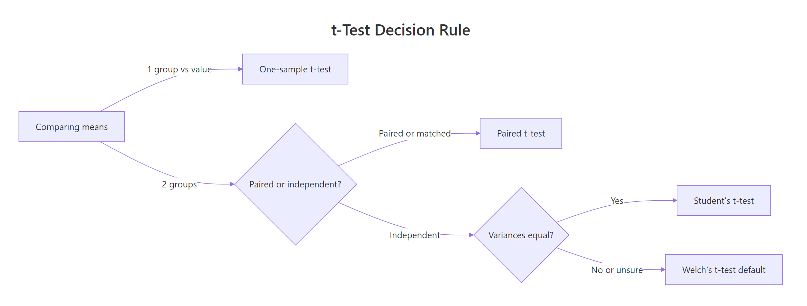
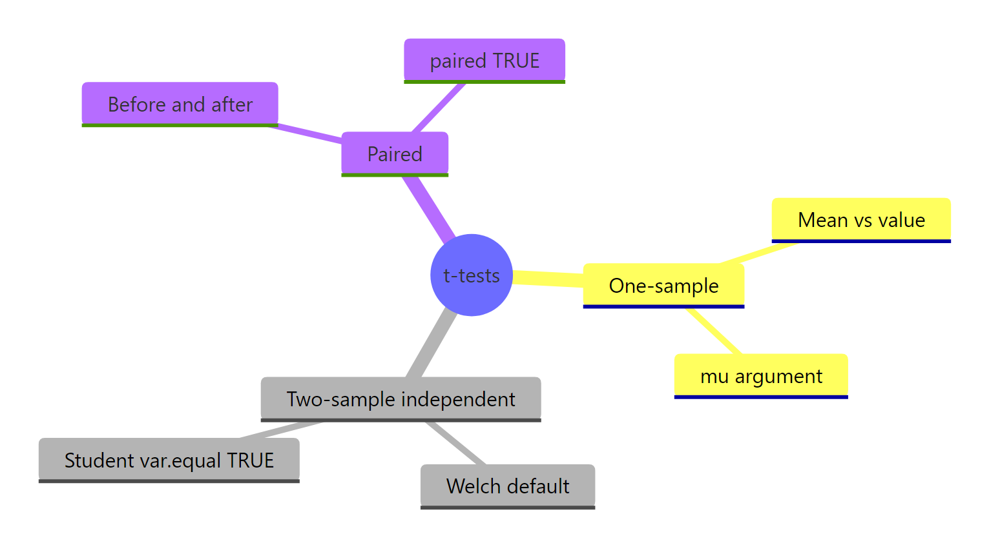

t-Tests in R: Every Variant With the Decision Rule for Choosing Between Them
A t-test asks whether an observed difference in means is large enough to be unlikely under chance. R's t.test() covers all four common variants, one-sample, Welch, Student's, and paired, and the trick is picking the right one. This post shows each variant in runnable R code, plus a decision rule so you never have to guess again.
How do you run a t-test in R?
The fastest way to see what a t-test does is to run one. Given the built-in mtcars dataset, we'll ask whether the average fuel economy differs from 20 mpg, a concrete question with a yes-or-no answer. One line of base R is all we need to get a p-value, a confidence interval, and the mean itself, so we can read the full story at a glance.
The call below is a one-sample t-test: one group of numbers compared to a hypothesized value (mu). Everything else is a variation on this template.
The sample mean is 20.09, almost exactly the hypothesized 20. The p-value of 0.93 is nowhere near 0.05, so we have no evidence that the true mean differs from 20. The 95% confidence interval [17.9, 22.3] comfortably contains 20, which tells the same story in a different language. Four numbers, one decision: fail to reject the null.
Try it: Run a one-sample t-test on iris$Sepal.Length to check whether its mean differs from 5.8.
Click to reveal solution
Explanation: The sample mean 5.84 is close to 5.8 and the p-value (0.52) is well above 0.05, so we can't reject the hypothesis that the true mean is 5.8.
Which t-test should you use?
Before running any t-test, you need to answer two quick questions about your data. The first is whether you're comparing one group to a fixed value, or two groups to each other. The second, if two groups, is whether the observations are paired (same subjects, measured twice) or independent (two separate samples). Variance equality is the tiebreaker inside the independent branch.

Figure 1: How to pick the right t-test variant from two quick questions.
The flowchart above is the rule we'll use throughout this post. Here are the four variants, all called through the same t.test() function:
Notice that R defaults to Welch's t-test for two-sample comparisons, not Student's. That's a deliberate, modern choice: Welch doesn't assume the two groups have the same variance, which they almost never do in real data. You only need var.equal = TRUE if you have a specific reason to force the Student's assumption (which is rare).
Try it: Match each study design below to the right t-test variant:
Click to reveal solution
Explanation: Start by counting groups. If one, it's one-sample. If two, ask whether each row in group A pairs with a specific row in group B. If yes, paired. If no, two-sample (and let R default to Welch).
How does the one-sample t-test work?
The one-sample t-test compares the mean of a single group to a hypothesized value. It answers questions like "is the average waiting time different from what the park ranger says?" or "does this batch's mean thickness match the factory spec of 5 mm?"
The test statistic is the ratio of the observed gap (sample mean minus hypothesis) to the standard error:
$$t = \frac{\bar{x} - \mu_0}{s / \sqrt{n}}$$
Where:
- $\bar{x}$ = sample mean
- $\mu_0$ = the hypothesized mean (the
muargument in R) - $s$ = sample standard deviation
- $n$ = sample size
A large |t| means the sample mean is many standard errors away from mu, so the hypothesis is implausible. R converts this to a p-value using the t-distribution with n - 1 degrees of freedom.
Let's run it on the faithful$waiting variable, which records minutes between Old Faithful eruptions. Park literature often cites 70 minutes as the average wait, and we'll test whether the data agrees.
The sample mean is 71.2 minutes, the t-statistic is 5.77, and the p-value is 2.06e-08, essentially zero. We reject the null: the true mean wait is not 70 minutes. The 95% CI [69.9, 72.5] just barely excludes 70, which tells you the real effect is small but the sample is large (n = 272), giving us enough power to detect it.
alternative argument.* If you only care whether the mean is greater* than mu, use alternative = "greater"; for less than, use "less". The default "two.sided" tests for any difference and is usually what you want unless you pre-registered a directional hypothesis.Try it: Test whether the mean of mtcars$mpg differs from 15. What does the result say?
Click to reveal solution
Explanation: The sample mean is ~20 mpg, far from 15. With p = 3e-05, we reject the null. The CI [17.9, 22.3] does not include 15.
How do Welch and Student two-sample t-tests differ?
Both variants compare the means of two independent groups. The difference is an assumption: Student's t-test assumes the two populations have the same variance and pools them for a single standard error estimate. Welch's drops that assumption and computes separate variances, paying a small cost in degrees of freedom (via the Welch-Satterthwaite correction).
Let's compare 4-cylinder and 6-cylinder cars in mtcars on fuel economy. First, filter and run the default (Welch):
Four-cylinder cars average 26.7 mpg, six-cylinder ones 19.7, a gap of 6.9 mpg. The p-value of 0.0004 rejects the null of equal means, and the CI [3.75, 9.93] pins the true gap with comfortable precision. Note the df of 12.96, fractional, a giveaway that this is Welch and not Student.
Now force Student's by setting var.equal = TRUE:
Same means, slightly different t-statistic and df. Student's uses a whole-number df of 16 (n_1 + n_2 − 2). The p-value moved from 0.0004 to 9.4e-05, not a meaningful change in conclusion. That's typical: Welch and Student agree on whether to reject; they differ in the numerical df and CI by small amounts.
| Aspect | Welch's t-test | Student's t-test |
|---|---|---|
| Equal-variance assumption | Not required | Required |
| Degrees of freedom | Fractional (Welch-Satterthwaite) | Integer (n_1 + n_2 − 2) |
| R argument | Default | var.equal = TRUE |
| Robustness to unequal variance | High | Low, especially with unequal n |
| When to prefer | Almost always | Only when variances are provably equal |
y ~ x over passing two vectors. The two-vector form t.test(a, b) works, but the formula form handles grouping, missing values, and subsetting more cleanly. It also makes the code self-documenting: mpg ~ cyl reads like "mpg by cylinder."Try it: Run Welch and Student variants on iris$Sepal.Length comparing setosa vs versicolor. How do the degrees of freedom differ?
Click to reveal solution
Explanation: Student's always gives n_1 + n_2 − 2 = 50 + 50 − 2 = 98. Welch's correction drops to ~86.5 because the two groups have different variances.
When should you use a paired t-test?
Use a paired t-test when the two sets of numbers aren't independent, they're linked by identity. The same 20 patients' blood pressure measured before and after a drug. The same 30 students' test scores under two conditions. Matched pairs (siblings, twins, before/after product redesign). The test works by computing each pair's difference and then running a one-sample test on those differences with mu = 0.
When pairing exists and you ignore it by running an unpaired test, you throw away the pairing structure and usually get a much larger p-value, because between-subject variation swamps the within-subject effect you care about.
The built-in sleep dataset is the classic example: extra hours of sleep for 10 patients under two different drugs. It's paired because each patient appears in both groups.
The p-value is 0.003, so we reject the null that the two drugs produce the same mean extra sleep. The mean difference is −1.58 hours (drug 1 gave less extra sleep than drug 2). Degrees of freedom are 9, which equals n − 1 where n is the number of pairs, not total observations.
Watch what happens when we ignore the pairing:
Same data, but now p = 0.08 and the CI crosses zero. We'd fail to reject the null and miss the real effect. The paired test exploits the correlation between each patient's two measurements; the unpaired test washes that correlation out.
t.test(before, after, paired = TRUE) pairs before[1] with after[1], before[2] with after[2], and so on. If your rows get out of sync (e.g., sorted differently), the pairing is silently wrong. Always verify with a quick head(cbind(before, after)) before the test.Try it: Extract the sleep data as two vectors by group, run a paired and an unpaired test, and compare the p-values.
Click to reveal solution
Explanation: The paired p-value is ~28× smaller. That's the statistical gift you get from respecting the pairing structure.
How do you check assumptions and report effect size?
A t-test rests on three assumptions: (1) observations are independent within each group, (2) data are approximately normal in each group, (3) for Student's only, variances are equal. R gives you tools for each.
Start with normality. The Shapiro-Wilk test returns a p-value where small p means evidence of non-normality:
Both groups return p > 0.05, so we can't reject normality in either. Good. Now variance equality with var.test():
The p-value is 0.18, so we can't reject the null of equal variances. In practice that means either Welch or Student would work; with mixed evidence, Welch is still the safer default.
A significant p-value tells you the difference is unlikely under the null, but not how big the difference is. Cohen's d answers that. It's the mean difference divided by a pooled standard deviation, a unitless number where 0.2 is small, 0.5 is medium, and 0.8+ is large.
$$d = \frac{\bar{x}_1 - \bar{x}_2}{s_{\text{pooled}}}$$
Where:
- $\bar{x}_1 - \bar{x}_2$ = the raw mean difference
- $s_{\text{pooled}} = \sqrt{\frac{(n_1 - 1) s_1^2 + (n_2 - 1) s_2^2}{n_1 + n_2 - 2}}$, the pooled standard deviation
Here's the calculation in R:
Cohen's d is 2.59, massive. Four-cylinder cars aren't just statistically more efficient than six-cylinder ones; they're about 2.6 pooled standard deviations more efficient. The rough thresholds below turn that number into something you can report in prose.
| Cohen's d | Effect size | How to describe |
|---|---|---|
| 0.2 | Small | Noticeable only with careful measurement |
| 0.5 | Medium | Visible to a trained observer |
| 0.8 | Large | Obvious to anyone looking |
| 1.2+ | Very large | Almost no overlap between groups |
Try it: Compute Cohen's d for the sleep paired data using the pooled-SD formula above.
Click to reveal solution
Explanation: d ≈ −0.83, a large effect. Drug 2 produced meaningfully more extra sleep than drug 1, not just statistically detectable but practically substantial.
What if your data violates t-test assumptions?
The central limit theorem rescues you more than you'd think. Even when individual observations aren't normal, the sampling distribution of the mean converges to normal as n grows. Simulations show that for n ≥ 30 per group, Welch's t-test is remarkably accurate even when the underlying data is skewed or heavy-tailed. So the honest answer for most real datasets is: just use Welch.
When you can't, because samples are small and clearly non-normal, two alternatives stand out. The Wilcoxon rank-sum test (also called Mann-Whitney U) compares ranks instead of means, so extreme values stop mattering:
The p-value of 0.0014 agrees with the Welch result from earlier (p = 0.0004); both reject the null firmly. For heavily skewed data the Wilcoxon would usually give a smaller p-value than a t-test, since it's not being pulled around by outliers.
The bootstrap is the sledgehammer option. Resample with replacement many times, compute the statistic each time, and read confidence intervals off the resampled distribution. No distributional assumptions at all:
The bootstrap 95% CI for the mean difference is [4.09, 9.84] mpg. Compare that to the Welch CI of [3.75, 9.93], essentially identical. When your sample is well-behaved, bootstrap and t-test agree. When it isn't, the bootstrap still tells the truth.
Try it: Run a Wilcoxon rank-sum test on iris$Sepal.Length comparing setosa and versicolor.
Click to reveal solution
Explanation: p ≈ 8e-14, essentially zero. Setosa and versicolor clearly differ in sepal length even by the more conservative rank-based test.
Practice Exercises
Exercise 1: Drug dosage study (medium)
Simulate systolic blood pressure for 30 patients before and after a drug: before normal with mean 145 and sd 12; after = before - 8 + rnorm(30, 0, 5). Pick the right t-test variant, run it, compute Cohen's d, and print a one-sentence report.
Click to reveal solution
Explanation: A paired t-test is correct because each patient contributes two measurements. p is essentially zero, the mean drop is ~8 mmHg, and Cohen's d of 1.51 is a very large effect. Report: "Systolic BP dropped significantly after the drug (paired t(29) = 8.2, p < 0.001, d = 1.51)."
Exercise 2: A/B conversion test (hard)
Simulate two independent groups with different variances: group_a <- rnorm(50, mean = 100, sd = 15), group_b <- rnorm(50, mean = 108, sd = 28). Check assumptions, pick the right variant, run it, and report the result with effect size and CI.
Click to reveal solution
Explanation: Both groups are normal, but variances differ sharply (F-test p = 2.9e-07). Welch is the correct pick. The test gives p = 0.056 (borderline) and Cohen's d ≈ −0.31 (small-to-medium effect). Report: "Group B scored higher on average, but the effect was small (d = −0.31) and not statistically significant at α = 0.05 (Welch t = −1.93, p = 0.056)."
Complete Example
Here's how the whole workflow fits together on a realistic scenario. A clinic tests a new drug for lowering systolic blood pressure. Forty patients have BP measured pre-treatment and again 8 weeks later. We want to know if the drug works, by how much, and how confident we can be.
The paired t-test returns a tiny p-value (3.4e-09), a 95% CI of [5.2, 9.0] mmHg, and a mean drop of 7.1 mmHg. Cohen's d of 1.19 is a very large effect. We'd report: "The drug produced a significant reduction in systolic BP of 7.1 mmHg on average (95% CI: 5.2-9.0, paired t(39) = 7.55, p < 0.001), with a very large effect size (d = 1.19)."
That single paragraph covers everything a reader or reviewer needs: the mean drop, the CI, the test used, the test statistic, the p-value, and the effect size. This is the target format for every t-test result you write up.
Summary

Figure 2: The four t-test variants and their R arguments at a glance.
The four variants, the questions they answer, and the R call for each:
| Variant | Question | R call | Typical use |
|---|---|---|---|
| One-sample | Is this mean different from a value? | t.test(x, mu = V) |
Batch thickness vs spec, test score vs national average |
| Welch (default) | Do two independent groups differ? | t.test(y ~ group, data = df) |
A/B tests, cohort comparisons |
| Student | Same as Welch, equal variances required | t.test(y ~ group, data = df, var.equal = TRUE) |
Rarely, only when variances are provably equal |
| Paired | Did the same subjects change? | t.test(before, after, paired = TRUE) |
Before/after treatment, matched pairs |
broom::tidy() to turn a t-test output into a one-row data frame. This makes t-test results easy to bind into summary tables, write to CSV, or pass into reporting pipelines. If broom isn't available, unclass() and as.data.frame(as.list(...)) also work.Three rules keep you out of trouble: (1) start with the decision rule, one group or two, independent or paired, (2) let R default to Welch for two-sample tests unless you have a strong reason otherwise, and (3) always pair the p-value with an effect size so your report communicates both detectability and importance.
References
- R Core Team,
stats::t.test()documentation. Link - Welch, B. L. (1947). The generalization of "Student's" problem when several different population variances are involved. Biometrika, 34(1-2), 28-35.
- Student [W. S. Gosset] (1908). The Probable Error of a Mean. Biometrika, 6(1), 1-25.
- Cohen, J. (1988). Statistical Power Analysis for the Behavioral Sciences (2nd ed.). Lawrence Erlbaum Associates.
- Delacre, M., Lakens, D., & Leys, C. (2017). Why Psychologists Should by Default Use Welch's t-test Instead of Student's t-test. International Review of Social Psychology, 30(1), 92-101. Link
- Ben-Shachar, M. S., Lüdecke, D., & Makowski, D. (2020). effectsize: Estimation of Effect Size Indices and Standardized Parameters. Journal of Open Source Software, 5(56), 2815. Link
- NIST/SEMATECH e-Handbook of Statistical Methods. Link
Continue Learning
- Hypothesis Testing in R, the framework that every t-test sits inside, from null and alternative to Type I/II errors.
- Confidence Intervals in R, what the CI that
t.test()prints actually means, and why the Bayesian intuition is wrong. - Effect Size in R, a deeper dive on Cohen's d, Hedges' g, and the other standardized mean differences.